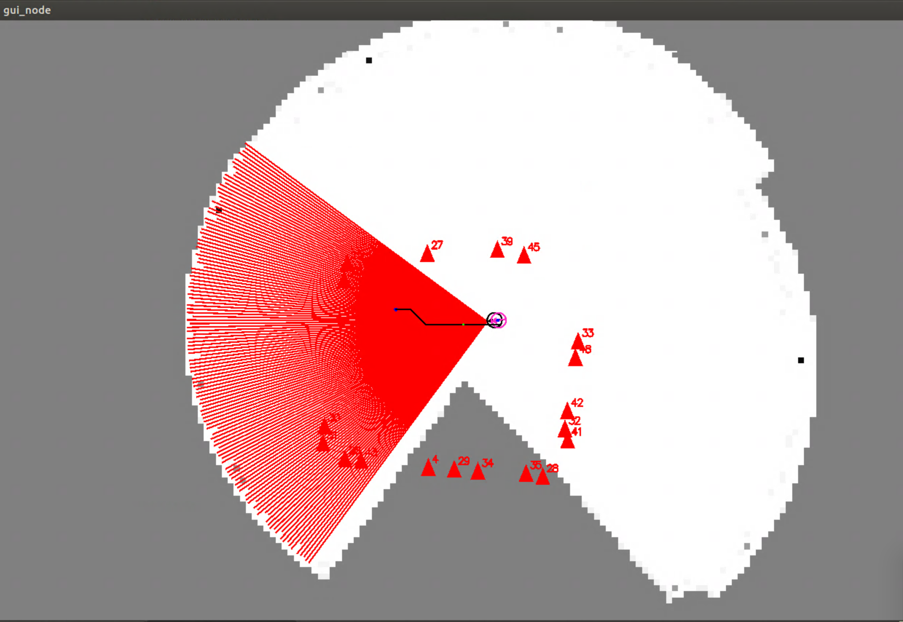
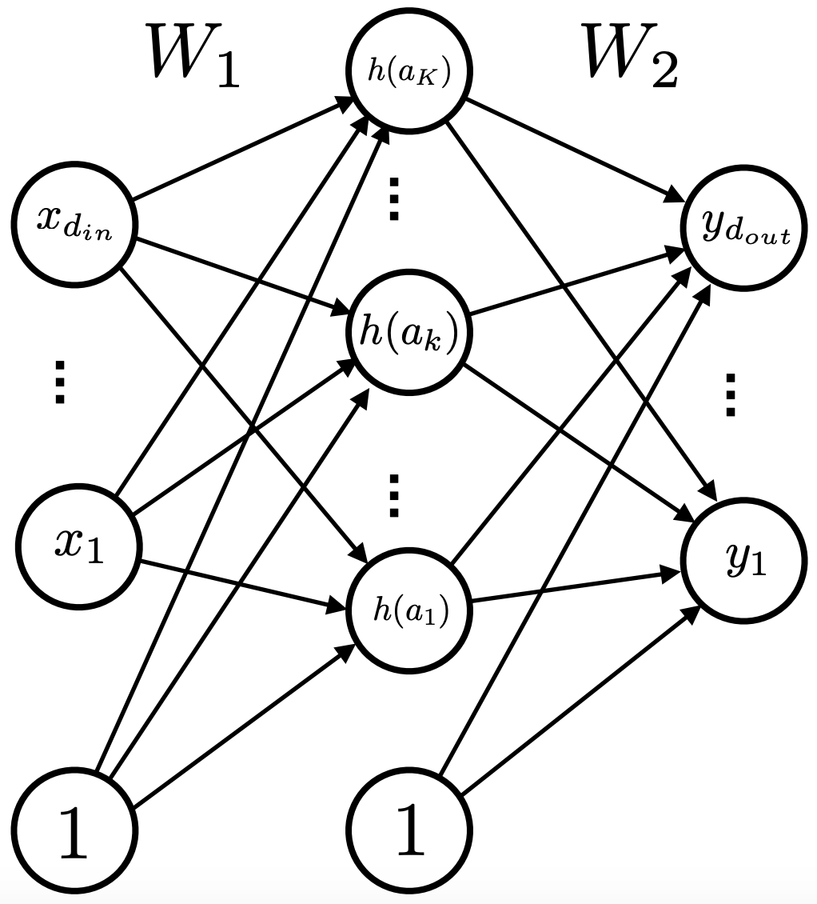

Abrar Rahman Protyasha
I am a senior undergraduate student studying Electrical and Computer Engineering at the University of Rochester. I am broadly interested in robotics and autonomous systems. This interest ranges throughout the 'robotics' stack: from motion planning and state estimation to manipulation and human-robot interaction. I have spent time as an Applications Engineering Intern at Silicon Labs, and as a Research Fellow at the Wireless Communication and Networking Group (WCNG).
Projects
Autonomous mobile robot software architectureROS packages (C++) for perception, occupancy grid mapping, path planning, localization, and path following controls to explore a partially known world using a TurtleBot2, in addition to a simulator and an OpenGL GUI for testing purposes.  |
Remotely operated vehicleA wirelessly controlled vehicle with an on-board Raspberry Pi and PIC32 MCU, driving two DC gear-motors through a dual motor driver carrier using a PID feedback controller. |
Feedforward neural networkImplemented a neural network architecture for binary classification on the HIGGS dataset. The feedforward, backpropagation, and SGD mechanisms were implemented using NumPy.  |
Two-stage, two-channel headphone amplifierROS packages (C++) for perception, occupancy grid mapping, path planning, localization, and path following controls to explore a partially known world using a TurtleBot2, in addition to a simulator and OpenGL GUI for testing purposes. |
ReversiROS packages (C++) for perception, occupancy grid mapping, path planning, localization, and path following controls to explore a partially known world using a TurtleBot2, in addition to a simulator and OpenGL GUI for testing purposes. |

Other
If you're still here: my real passion is soccer, but my right ankle's raison d'être is to stay injured... sigh. Other than playing soccer, I also watch soccer (Chelsea FC!), and play more soccer (FIFA!).
My best friend is a cat named Pico. Full disclosure, I play soccer with Pico, too.
Languages: Bengali (native), English (proficient), C (segfault)